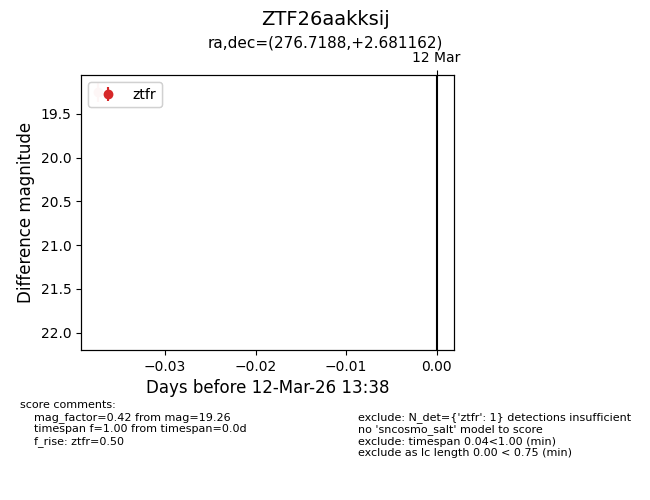
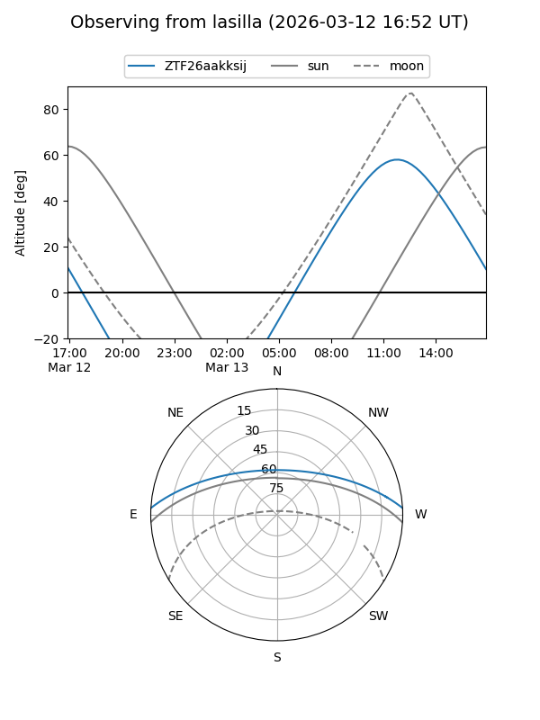
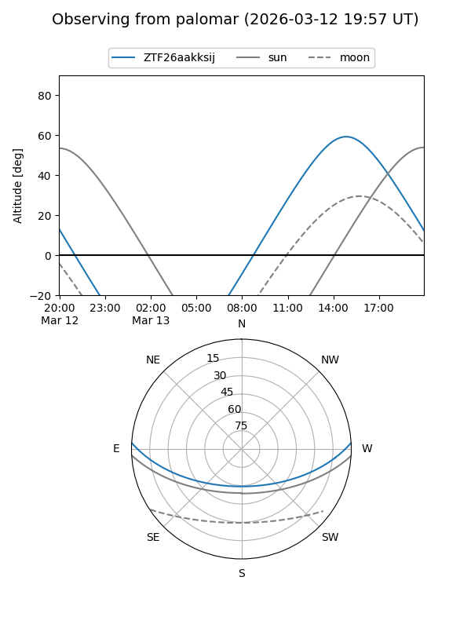
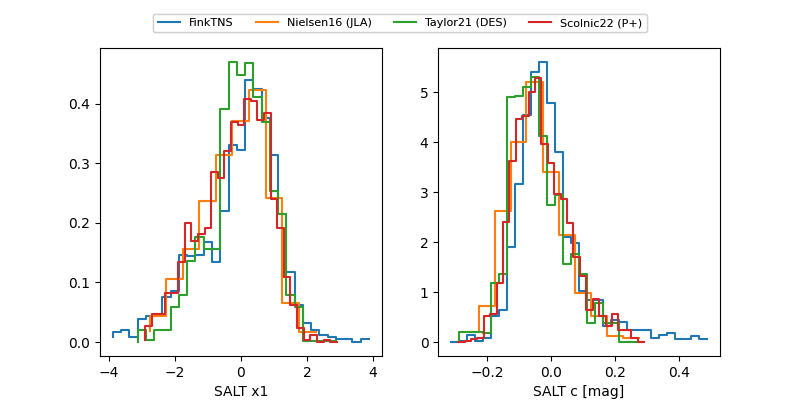

ZTF26aakksij
Target ZTF26aakksij at 2026-03-12 13:40
Aliases and brokers:
FINK: link
Lasair: link
ALeRCE: link
alt names
ZTF26aakksij (ztf,fink_ztf)
Coordinates:
equatorial (ra, dec) = 276.7188,+2.68116
equatorial (HMS+DMS) = 18:26:52.52,+02:40:52.18
galactic (l, b) = (32.5228,+6.68597)
Flags:
Photometry:
last ztfr=19.26
1 ztfr detections
Lightcurve

Visibility


Additional plots
